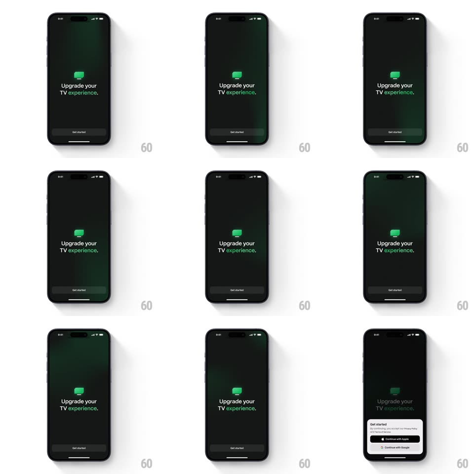

Media
Frame-by-frame

Rebuild this interaction 1:1: Marathon's splash-to-sign-in - the dark splash ("Upgrade your TV experience." with the green TV glyph and Get started button) dims as a white bottom sheet slides up with a subtle spring, carrying Continue with Apple / Continue with Google and the privacy terms line.

Rebuild this interaction 1:1: Marathon's splash-to-sign-in - the dark splash ("Upgrade your TV experience." with the green TV glyph and Get started button) dims as a white bottom sheet slides up with a subtle spring, carrying Continue with Apple / Continue with Google and the privacy terms line.
## Integration
Integration: stack-agnostic spec - springs given as stiffness/damping, timed motions as duration + curve; map every value to your framework and animation library of choice.
## Scene
Splash: near-black screen, green TV icon above the two-line pitch ("experience." in green), Get started pill at the bottom. Sheet: white rounded-top card with "Get started" title, terms line, and two sign-in buttons (Apple black, Google white-outlined).
## Motion spec
Pattern: spring bottom sheet over dimming splash.
- Tap Get started: the splash dims to 40% (300ms) as the sheet slides up from the bottom (spring ~320/26, 450ms, a single soft overshoot past its rest position).
- The sheet's contents stagger in after the sheet lands: title, terms, buttons (fade + rise 8px, 200ms, 60ms apart).
- The splash's TV glyph and copy stay visible but dimmed above the sheet - the context never leaves.
- Swipe down on the sheet (or tap the dim): it slides away on the same spring and the splash un-dims.
- The sheet's corner radius (20px) stays constant through the motion.
## Calibration
- One overshoot only - a sheet that bounces twice feels broken.
- The dim and the slide start together; neither waits for the other.
## Reduced motion
Sheet fades in at rest position (250ms); splash dims without motion.
## Don't miss
- "experience." is the only green word on the splash - the accent echoes the TV glyph.
- The Apple button is black-on-white inside the white sheet - full contrast, standard sign-in ordering (Apple first).